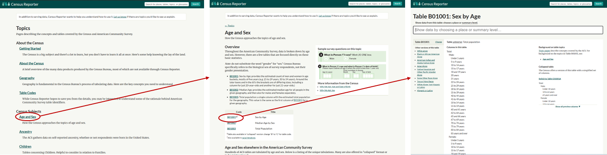

4 Querying Decennial and ACS Data with tidycensus

Census data is available online at data.census.gov. This is an ok website to explore variables, but it is not easy to customize data downloads to get a variety of geographies or specific variables. Instead, tidycensus allows you to pull in most data from:
- Decennial Census (1990-present)
- American Community Survey 1-Year Data (2005-present)
- American Community Survey 5-Year Data (2009-present)
For older Census data, use the National Historical Geographic Information System (NHGIS). For microdata (e.g., to cut the data differently than is available in the standard tables) use IPUMS.
4.1 API Key
An API key is a short authentication string issued by a data provider that accompanies requests so the service can recognize and regulate access. The tidycensus package can run without a key, but requests are subject to a limit of 500 queries per IP address per day. Obtaining a key is recommended for regular or large data pulls because it reduces the risk of throttling. A free, immediately-issued key can be obtained at api.census.gov/data/key_signup.html. Note: this is your API key; save the email from the Census and avoid typing the key into saved code or otherwise sharing it. Instead, run the following code once by pasting it directly into the console:
4.2 Setting the Universe
Before selecting variables, it is important to establish the universe being queried. The combined selection of geographic level, survey, and year determines which variables are available and how those variables are coded.
4.2.1 Geographic Level
Chapter 2 provides a detailed description of geographic levels and how to they are called in the query. In general, the geographic level is selected based on a project’s unit of analysis and overall analytical design. However, this choice directly affects data availability: some variables are not reported for smaller geographies, and working at finer geographic scales often requires certain surveys like the ACS 5-year estimates over the ACS 1-year estimates. Obtaining tract- or block-level data for later reaggregation is also an option, although median values are difficult to aggregate accurately.
4.2.2 Survey
tidycensus has two main functions to query either the Decennial Census (get_decennial()) or the ACS (get_acs()). In addition to the Decennial Census being a true census while the ACS is a survey, the choice between the two often comes down to frequency of data collection (decennial vs annual) and indicators of interest (basic enumeration versus a wide range of socioeconomic indicators).
Querying the ACS requires a survey argument of either acs1 or acs5. The 1-year survey (acs1) provides single year estimates for areas with populations of at least 65,000, while the 5-year survey (acs5) provides five year pooled estimates that cover all geographies down to the tract and block group level. (Pooling estimates increases statistical reliability by expanding the effective sample size, which reduces sampling error and improves estimate stability for small geographies and rare populations.) Projects typically use the 1-year survey for large geographies when timeliness is critical and the 5-year survey for smaller areas or when greater statistical reliability is needed.
Querying the Decennial Census has a less intuitive survey argument called sumfile that has more to do with selecting a set of tables than selecting statistical strength:
2020 Decennial Survey
| Code | Title | Use Case |
|---|---|---|
PL |
P.L. 94-171 Redistricting File | Basic population and housing counts including voting age, race, Hispanic or Latino origin, housing occupancy, and major group quarters categories |
DHC |
Demographic and Housing Characteristics File | Detailed demographic and housing characteristics including age and sex distributions, household and family structure, relationship to householder, tenure, and group quarters detail |
2010 Decennial Survey
| Code | Title | Use Case |
|---|---|---|
SF1 |
Summary File 1 | Basic population and housing characteristics including age, sex, race, Hispanic or Latino origin, household type, family type, relationship to householder, group quarters population, housing occupancy, and housing tenure |
SF2 |
Summary File 2 | Detailed race and Hispanic origin tabulations providing expanded race specific iterations of selected population and housing tables |
2000 Decennial Survey
| Code | Title | Use Case |
|---|---|---|
SF1 |
Summary File 1 | Basic population and housing characteristics including age, sex, race, Hispanic or Latino origin, household type, family type, relationship to householder, group quarters population, housing occupancy, and housing tenure |
SF2 |
Summary File 2 | Detailed race and Hispanic origin tabulations providing expanded race specific iterations of selected population and housing tables |
SF3 |
Summary File 3 | Sample based socioeconomic characteristics including income, poverty, employment, education, commuting, housing costs, and detailed housing characteristics |
SF4 |
Summary File 4 | Detailed race and Hispanic origin tabulations providing expanded race specific iterations of selected socioeconomic tables from Summary File 3 |
1990 Decennial Survey
| Code | Title | Use Case |
|---|---|---|
STF1 |
Summary Tape File 1 | Basic population and housing characteristics including age, sex, race, Hispanic origin, household type, family type, relationship to householder, group quarters population, housing occupancy, and housing tenure |
STF2 |
Summary Tape File 2 | Detailed race and Hispanic origin tabulations providing expanded race specific iterations of selected population and housing tables |
STF3 |
Summary Tape File 3 | Sample based socioeconomic characteristics including income, poverty, employment, education, commuting, housing costs, and detailed housing characteristics |
STF4 |
Summary Tape File 4 | Detailed race and Hispanic origin tabulations providing expanded race specific iterations of selected socioeconomic tables from Summary Tape File 3 |
4.2.3 Year
One of the most important implications of the year selected is the vintage of the geographic level: all years within a decade report data aggregated to the vintage of the previous Decennial Census (e.g., data from 2019 is provided at 2010 boundaries while data from 2020 is provided at 2020 boundaries). In the special case of the 5-year ACS, the vintage is based on the final year even if the pooled years are divided by a Decennial Census (e.g., the 5-year ACS for 2020 is provided at 2020 boundaries even though it is pooling 1-year ACS data for 2016, 2017, 2018, 2019, and 2020). (See Chapter 3 for guidance on comparing indicators across vintages.)
In addition to this structural implication, variables can be re-named, re-defined, added, or subtracted between years. Using the same query for multiple years is risky as it will often return data that is quietly different from what was intended. Make sure to separately pull variable codes and rename them for each year. For example:
Note that 3 bins have been added since 2005, the cap increased from “$2,000 or more” in 2005 to “$3,500 or more” in 2010, and “No Cash Rent” was coded “B25063_024” in 2005 and “B25063_027” in 2024.
4.3 Variables
tidycensus provides a way to quickly load all variables in a given year and survey, but the output is hard to work with:
Understanding the logic behind table numbering is an easier way to locate specific variables.
4.3.1 ACS Tables
ACS tables are labeled with codes like “B01001A” where each element provides information on the data contained within the table. When looking for a specific table or exploring a subject, the best place to start is the Census Reporter.

4.3.1.1 Type of Table
- E.g.,
B01001Ais typeB(a detailed base table)
| Code | Title | Definition |
|---|---|---|
| B | Detailed Base Table | Most detailed estimates on all topics for all geographies |
| C | Detailed Collapsed Table | Similar information from its corresponding Base Table (B) but at a lower level of detail because one or more lines in the Base Table have been grouped together |
| K20 | Supplemental Table | Provides supplemental 1-year ACS estimates for selected geographies with populations between 20,000 and 65,000 |
| S | Subject Table | A span of information on a particular ACS subject, such as veterans, presented in the format of both estimates and percentages |
| R | Ranking Table | State rankings across approximately 90 key variables |
| GCT | Geographic Comparison Table | Comparisons across approximately 95 key variables for geographies other than states such as counties or congressional districts |
| DP | Data Profile | Broad social, economic, housing, and demographic information in a total of four profiles |
| NP | Narrative Profile | Summaries of information in the Data Profiles using nontechnical text |
| CP | Comparison Profile | Comparisons of ACS estimates over time in the same layout as the Data Profiles |
| S0201 | Selected Population Profile | Broad ACS statistics for population subgroups by race, ethnicity, ancestry, tribal affiliation, and place of birth |
4.3.1.2 Subject
Only encoded in the table ID for B, C, K20, S, R, and GCT tables
- E.g.,
B01001Ais subject01(age and sex)
| Code | Subject |
|---|---|
| 01 | Age; Sex |
| 02 | Race |
| 03 | Hispanic or Latino Origin |
| 04 | Ancestry |
| 05 | Citizenship Status; Year of Entry; Foreign Born Place of Birth |
| 06 | Place of Birth |
| 07 | Migration/Residence 1 Year Ago |
| 08 | Commuting (Journey to Work); Place of Work |
| 09 | Relationship to Householder |
| 10 | Grandparents and Grandchildren Characteristics |
| 11 | Household Type; Family Type; Subfamilies |
| 12 | Marital Status; Marital History |
| 13 | Fertility |
| 14 | School Enrollment |
| 15 | Educational Attainment; Undergraduate Field of Degree |
| 16 | Language Spoken at Home |
| 17 | Poverty Status |
| 18 | Disability Status |
| 19 | Income |
| 20 | Earnings |
| 21 | Veteran Status; Period of Military Service |
| 22 | Food Stamps/Supplemental Nutrition Assistance Program (SNAP) |
| 23 | Employment Status; Work Status Last Year |
| 24 | Industry, Occupation, and Class of Worker |
| 25 | Housing Characteristics |
| 26 | Group Quarters |
| 27 | Health Insurance Coverage |
| 28 | Computer and Internet Use |
| 29 | Citizen Voting-Age Population |
| 98 | Quality Measures |
| 99 | Allocation Table for Any Subject |
4.3.1.3 Table Number
- E.g.,
B01001Ais table number001(sex by age) of subject01
A 2-3 digit number that uniquely identifies the table within a given subject.
4.3.1.4 Race Iteration
Selected tables only
- E.g.,
B01001Ais the version of tableB01001that looks only at iterationA(individuals identified as white alone, without regard to Hispanic or Latino origin)
| Code | Population |
|---|---|
| A | White Alone |
| B | Black or African American Alone |
| C | American Indian and Alaska Native Alone |
| D | Asian Alone |
| E | Native Hawaiian and Other Pacific Islander Alone |
| F | Some Other Race Alone |
| G | Two or More Races |
| H | White Alone, Not Hispanic or Latino |
| I | Hispanic or Latino |
Note: This structure only provides the ability to break out race and ethnicity (i.e., Hispanic or Latino) for “Non-Hispanic White” (iteration H) and “Hispanic of Any Race” (iteration I), all other iterations (A-G) include Hispanic and non-Hispanic totals (i.e., they are not mutually exclusive with the “Hispanic of Any Race” iteration).
4.3.1.5 Frequently Used Tables
| Code | Description | Use Case |
|---|---|---|
| B01001 | Sex by Age | Total population, male population, female population, under 18, over 65 |
| B03002 | Hispanic or Latino by Race | Non-Hispanic race counts to avoid double counting when Hispanic is a category |
| B19013 | Median Household Income in the Past 12 Months | Income estimate |
| B19001 | Household Income in the Past 12 Months | Binned income counts |
| B17001 | Poverty Status in the Past 12 Months by Sex by Age | Poverty count by age, sex, or both |
| B23025 | Employment Status for the Population 16 Years and Over | Unemployment rate |
| B25002 | Occupancy Status | Count of vacant, occupied, and total housing units |
| B25003 | Tenure | Count of owner-occupied and renter-occupied units |
| B25064 | Median Gross Rent | Rent estimate |
| B25063 | Gross Rent | Binned rent counts |
| B25071 | Median Gross Rent as a Percentage of Household Income in the Past 12 Months | Rent burden estimate |
| B25070 | Gross Rent as a Percentage of Household Income in the Past 12 Months | Binned count of rent burden |
4.3.2 Decennial Tables
Decennial tables are less intuitive and require more exploration to identify the correct table. Each summary file (see above for more information) has a distinct set of tables, so the first step is selecting the summary file and then exploring the tables within that file. In general, tables are numbered as follows:
| Code | Description |
|---|---|
| P | Population tables providing full detailed distributions of population characteristics |
| H | Housing tables providing full detailed distributions of housing unit characteristics |
| PCT | Population cross tabulations providing multi dimensional breakdowns of population characteristics across multiple variables |
| HCT | Housing cross tabulations providing multi dimensional breakdowns of housing characteristics across multiple variables |
| PCO | Population characteristics tables providing condensed summary indicators for selected population measures |
| HCO | Housing characteristics tables providing condensed summary indicators for selected housing measures |
| PL | Tables derived from the Redistricting Data (P.L. 94-171) Summary File |
4.3.2.1 Frequently Used Tables
Make sure to confirm the numbering is the same in the selected summary file
| Code | Description | Use Case |
|---|---|---|
| P12 | Sex by Age | Total population, male population, female population, under 18, over 65 |
| P5 | Hispanic or Latino by Race | Non-Hispanic race counts to avoid double counting when Hispanic is a category |
| H3 | Occupancy Status | Count of vacant, occupied, and total housing units |
| H4 | Tenure | Count of owner-occupied and renter-occupied units |
4.4 Querying
After deciding on the universe and identifying the variables of interest, plug everything into one of the tidycensus query functions.
### Basic Query
# Decennial
tidycensus::get_decennial(
#Geographic Level
geography = "region",
#Survey
sumfile = "sf1",
#Year
year = 2010,
#Variables
variables = c(Population = "P001001")
) # American Community Survey
tidycensus::get_acs(
#Geographic Level
geography = "region",
#Survey
sumfile = "acs1",
#Year
year = 2010,
#Variables
variables = c(Population = "B01001_001")
) 4.4.1 Whole Table Query
Note that the variables are only provided by code and not a descriptive label
4.4.2 Pre-Filtering
Rather than pulling in all units of the geographic level selected, it is possible to limit the query to specific areas. Some small geographies (e.g., tracts and blocks) actually require specification of state and even county to avoid overwhelming the API. However, it is possible to include multiple specifications for each level within the same query.
4.4.3 Iterating
Each query must be for a single year and geographic level. To compare multiple levels and/or multiple years, use purrr to iterate.
4.4.4 Output Options
As a package adjacent to the tidyverse, tidycensus defaults to a tidy output. This means that each row is a single variable for a single unit of the geographic level selected, with one column for the estimate and another for the margin of error (when querying the ACS). While this output works for many use cases, the presence of both the estimate and the margin of error makes it difficult to pivot wider while preserving both values. Instead, the output can be set to wide and then each row is a single unit of the geographic level selected and each variable as two columns, one for the estimate (E) and another for the margin of error (M)